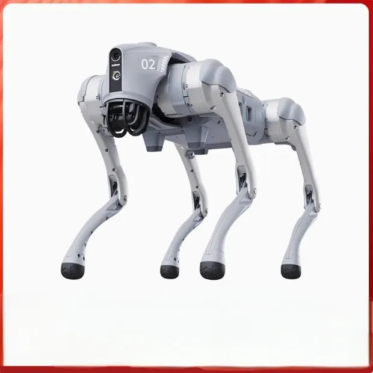

Kepler K2 - the sub-$30k industrial humanoid
Kepler K2A full-size humanoid targeting industrial work at sub-US$30,000 — Shanghai's challenger to Unitree's volume play.
KeplerIndustrial
Full profile →
China's robots stopped being demo props. These are the machines shipping today — from 10 m/s humanoid sprinters to dexterous hands that peel a banana.
The marquee category — and where China now leads the world in shipped units.

Unitree G1 - first mass-produced biped humanoid past 10,000 units
Unitree G1The first mass-produced biped humanoid to cross 10,000 units. An aggressively priced, standardised platform that ships to researchers, developers and increasingly commercial customers worldwide.

Unitree H1 - the humanoid sprint champion
Unitree H1 / H2Unitree's speed machine. In 2026 the H1 was clocked sprinting at 10 m/s — near human record pace — while the H2 adds stronger arms for real work. The company also showed a "superman" prototype jumping 2 metres vertically.

Agibot Yuanzheng A2 - full-size humanoid flagship
Agibot Yuanzheng A2The flagship of Agibot's "Yuanzheng" (远征) family — a full-size humanoid built around Agibot's own embodied models. Agibot shipped ~8,400 humanoids in H1 2026, the most in the world.

UBTECH Walker S - working real shifts on real assembly lines
UBTECH Walker SOne of the first humanoids to work real shifts in real factories, collaborating on automotive assembly lines. UBTECH raised its 2026 Walker S target to 5,000 units as it pushes for "large-scale commercialisation."
GR-1, GR-2 and GR-3: full-size humanoids with up to 54 degrees of freedom, evolved from Fourier's rehabilitation-robotics actuation. GR-3 targets elderly care and home assistance.

EngineAI T800 - the showman humanoid
EngineAI T800The showman's robot — 1.7 metres tall, able to dance, play football, and knock its founder flying with a kick. A flagship of EngineAI's ladder of T800 (general), SA02 (commercial) and PM01 (research) models.
The robot "footballer" — the standard player platform at the 2026 World Humanoid Robot Games and RoboCup. T2 Pro cut system latency to 4ms, with 10x the edge compute of its predecessor.

Kepler K2 - the sub-$30k industrial humanoid
Kepler K2A full-size humanoid targeting industrial work at sub-US$30,000 — Shanghai's challenger to Unitree's volume play.

LimX CL-1 - dynamic stair climbing humanoid
LimX Dynamics CL-1A full-size humanoid built on LimX's quadruped-leg engineering — dynamic walking and stair climbing from Shenzhen.
China's robot dogs are a global export hit — and wheel-legged designs are blurring the line between wheels and feet.

Unitree Go2 - the robot dog that went global
Unitree Go2 / B2The robot dog that became a global phenomenon — rented in fleets of 50+ in the US for inspection and entertainment. A low-cost, high-volume proof that Chinese robotics can ship hardware at scale.
Direct-drive wheel-legged platforms (D1, TITA, "Xingtian") exported to 50+ countries — from research platforms to delivery trials with JD.com. Built on Benmo's homegrown direct-drive modules.
The "last mile" of robotics — hands that can do what human hands do.
A five-fingered, two-handed robot that peels bananas, opens bottles and flips pans — powered by a "physical world model" trained on human demonstration data. The demo that stunned the industry in April 2026, four months after founding.
Not a hand, but what teaches one: neuro-muscular signal capture that turns human fine manipulation into robot-training data. The emerging "data layer" of the robotics stack.
A wheeled dual-arm robot with an industrial-grade record — 50,000+ hours without core failure — deploying in automotive, semiconductor and biopharma plants. The vehicle for Guo Yandong's VLA model.

Astribot S1 - 10 m/s dexterous manipulation
Astribot S1The 10 m/s dual-arm manipulation robot — folding clothes, writing calligraphy and assembling at human-plus speed.
The backbone of the industry — arms that weld, assemble and pick at industrial speed.
Six-axis, SCARA and collaborative arms from China's No.1 industrial-robot brand — ~33,400 units shipped in 2025, overtaking the foreign "big four" in domestic market share. Deep in EV battery and PV manufacturing lines.
The "eyes and brain" of industrial robots: AI-driven 3D cameras and software that let arms pick unordered parts, bin-pick and inspect. ~22% of the global AI+3D-vision guided component market.
One of the first force-controlled humanoid dual-arm robots to ship in volume — 2,000+ units in four months — targeting precision tasks that need a gentle, human-like touch.
Harmonic reducers, force sensors and micro-motors — the "muscles and tendons" of humanoid robots. ~300,000 reducer units already ordered by EngineAI, Fourier and others.
From the robots already in our lives to the ones in the sky.
Commercial floor-cleaning robots deployed across dozens of countries — the "boring" product that quietly became a 14-billion-yuan business. A new AI-powered line launched with SoftBank's US arm in 2026.
Self-cleaning-mop robot vacuums that turned a Dongguan startup into a global brand, with overseas orders in the hundreds of millions in 2026. A flagship of the XbotPark alumni wave.

DJI - the reference product of the Chinese hardware ecosystem
DJI DronesThe reference product of China's hardware ecosystem — consumer drones that defined and dominate a global category. Proof that Chinese robotics can create, not just catch up.
A flapping-wing robot bird so lifelike that real birds fly alongside it. Quiet, safe and biomimetic, it learned to fly in a self-built fluid-simulation engine before touching the real sky.

Ecovacs Deebot - the home-robot pioneer
Ecovacs DeebotThe brand that created the Chinese robot-vacuum category in 2006 — now shipping self-cleaning-mop flagships worldwide.

Roborock S8 - the hardware-specs challenger
Roborock S8The hardware-specs challenger — 8,000 Pa suction, dual rubber brushes and self-emptying docks that dominate the global premium segment.
Understand the forces that produced these machines — from 1980 to the humanoid era.